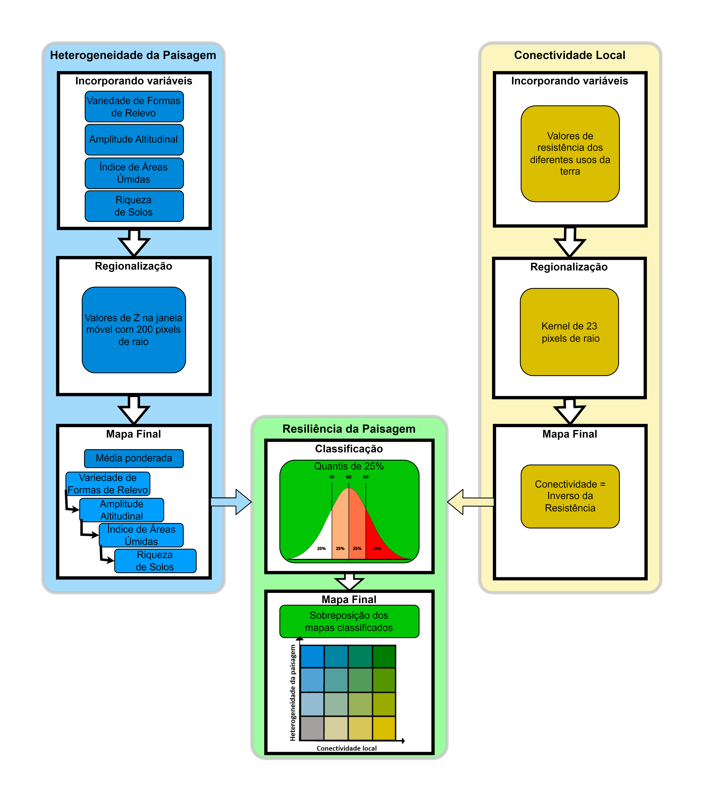
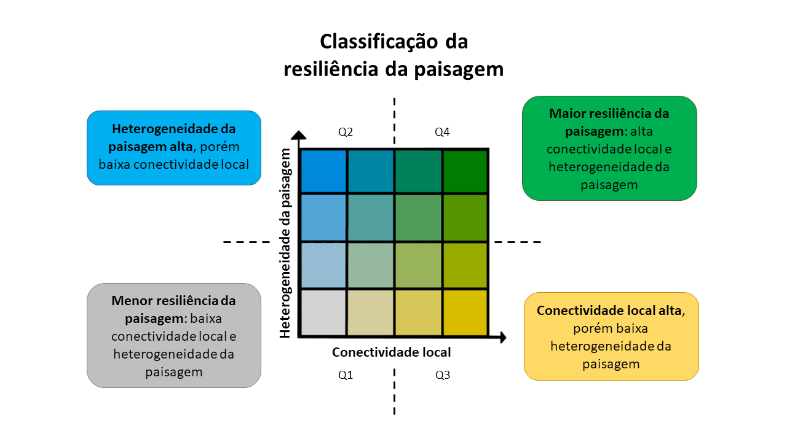

8 Metodologia resumida
A metodologia proposta para identificar áreas resilientes às mudanças climáticas envolve o mapeamento da heterogeneidade da paisagem e da conectividade local (Anderson et al., 2014, 2023; Anderson, Barnett, Clark, Sheldon, et al., 2016; Anderson, Barnett, Clark, Prince, et al., 2016), que são as camadas que, combinadas, irão compor a camada de resiliência da paisagem (Figura 12.3). Os sítios com maior resiliência possuem alto potencial de manter a biodiversidade em um cenário de mudanças climáticas e estão conectados entre si (Anderson et al., 2014), permitindo a movimentação da biodiversidade para locais com microclimas adequados.

8.1 Heterogeneidade da paisagem
A heterogeneidade da paisagem se refere a uma estimativa da variabilidade microclimática e resume informações relacionadas a: (a) variedade de formas de relevo, (b) amplitude altitudinal, (c) índice de áreas úmidas e (d) riqueza de solos presentes no entorno de uma dada localidade.
8.1.1 (a) Variedade de formas de relevo
A variedade de formas de relevo (landforms) diz respeito à variedade de feições topográficas baseada em um modelo de formas de relevo. As feições foram derivadas de um modelo digital de elevação (DEM) com resolução de 90 m, em que a superfície foi classificada a partir de características tais como:
- precipícios e áreas íngremes (cliff e steep slope);
- topos de montanha e divisores de águas (summit/ridge-top);
- vertentes norte e sul, que determinam se uma vertente é quente ou fria, especialmente em latitudes maiores (warm/cool side slope);
- colinas (flat hill top e gentle slope hilltop);
- áreas planas de terras baixas (dry flat), entre outros.
As classes de formas de relevo foram baseadas no índice de inclinação do relevo, exposição da vertente, posição topográfica e acúmulo de umidade (slope, aspect, land position e moisture accumulation), para representarem locais com diferenças em umidade, radiação e deposição. A variedade de formas de relevo foi calculada como a quantidade de formas de relevo dentro de uma área circular, de 450 m de raio, no entorno de cada célula de 90 m.
8.1.2 (b) Amplitude altitudinal
Para o cálculo da amplitude altitudinal foi utilizada uma área circular de 450 m de raio no entorno de cada célula de 90 m do DEM. A amplitude altitudinal considerada no estudo corresponde ao componente não correlacionado com a variedade de formas de relevo (os resíduos de uma regressão linear simples).
8.1.3 (c) Índice de áreas úmidas
Para áreas planas, nas quais a variedade de formas de relevo e a amplitude altitudinal não permitem discriminar a variação microclimática, a densidade e quantidade de áreas úmidas capturam a variação microclimática.
A densidade e quantidade de áreas úmidas são resumidas no índice de áreas úmidas, obtido pela média da densidade de áreas úmidas dentro de áreas circulares de 450 m de raio (escala local) e 1.170 m de raio (escala regional), no entorno de cada célula de 90 m. A densidade calculada em áreas circular é combinada com a quantidade de áreas úmidas (wetland patchiness) em área circular de 1.170 m de raio, formando o índice de áreas úmidas.
8.1.4 (d) Riqueza de solos
Por fim, em locais com baixa variação de formas de relevo, amplitude de elevação e presença de áreas úmidas, a riqueza de solo foi usada para identificar variações na paisagem que possam sustentar a variação da biodiversidade. Esse dado é calculado pela soma de tipos de solos dominantes e subdominantes existentes em uma determinada região.
8.2 Padronização dos dados (valores de Z)
Antes de calcularmos a resiliência da paisagem, as variáveis variedade de formas de relevo, amplitude de elevação, índice de áreas úmidas e riqueza de solos são convertidas para valores de Z (Z-scores), dentro de janelas móveis de 200 pixels de raio. Isso permite a integração de condições físicas e ambientais distintas e permite capturar variações locais na composição da biota associada. Posteriormente, os valores de Z são combinados para gerar a camada de heterogeneidade da paisagem. Nesse processo de combinação dos valores de Z de cada variável, na maior parte dos casos, a variedade de formas de relevo é ponderada com peso maior, representado pelo dobro do peso das demais variáveis.
8.3 Conectividade local
A conectividade local é uma medida de facilitação ao deslocamento de organismos entre os tipos de uso e cobertura do solo. Ela é maior quanto menor for a resistência ao deslocamento dos organismos e representa a permeabilidade da paisagem (ou inversamente a resistência) em torno de cada célula avaliada.
A partir de um mapa de uso e cobertura do solo, incluindo a presença de infraestruturas de transporte e de energia, foram atribuídos pela equipe central, para cada classe, pesos de resistência à movimentação de organismos: os valores menores (menor resistência) foram atribuídos para áreas naturais e os valores maiores (maior resistência), atribuídos a áreas intensamente antropizadas (áreas urbanas), com um gradiente de valores entre um extremo e outro. Rios também podem representar barreiras ao deslocamento das espécies ao longo da paisagem, dependendo de suas características, e portanto também foram atribuídos pesos distintos de resistência aos corpos d’água em função de sua largura: quanto mais largo, maior o valor de resistência.
Uma vez atribuídos os valores de resistência, a conectividade local foi estimada pela média ponderada das resistências dentro uma janela móvel circular de aproximadamente 2.070 m, que representa o contexto espacial em que cada pixel está inserido. Para o cálculo da média ponderada, foi utilizada uma função de decaimento linear que reconhece que pixels mais próximos possuem maior influência do que pixels mais distantes, influenciando o valor de conectividade local de cada pixel.
8.4 Resiliência da paisagem
Finalmente, a resiliência da paisagem é calculada pela sobreposição dos mapas de heterogeneidade da paisagem e conectividade local baseada no histograma de distribuição dos valores dessas métricas (classificados em quantis de 25%) (Figura 13.3). Dessa forma, podemos criar um mapa bivariado da resiliência da paisagem, que tem como objetivo mostrar as áreas onde os resultados das duas métricas se sobrepõem ou divergem. Com base na escala de cor apresentada, são identificadas áreas onde a heterogeneidade da paisagem e a conectividade local são mais importantes para a resiliência da paisagem.
